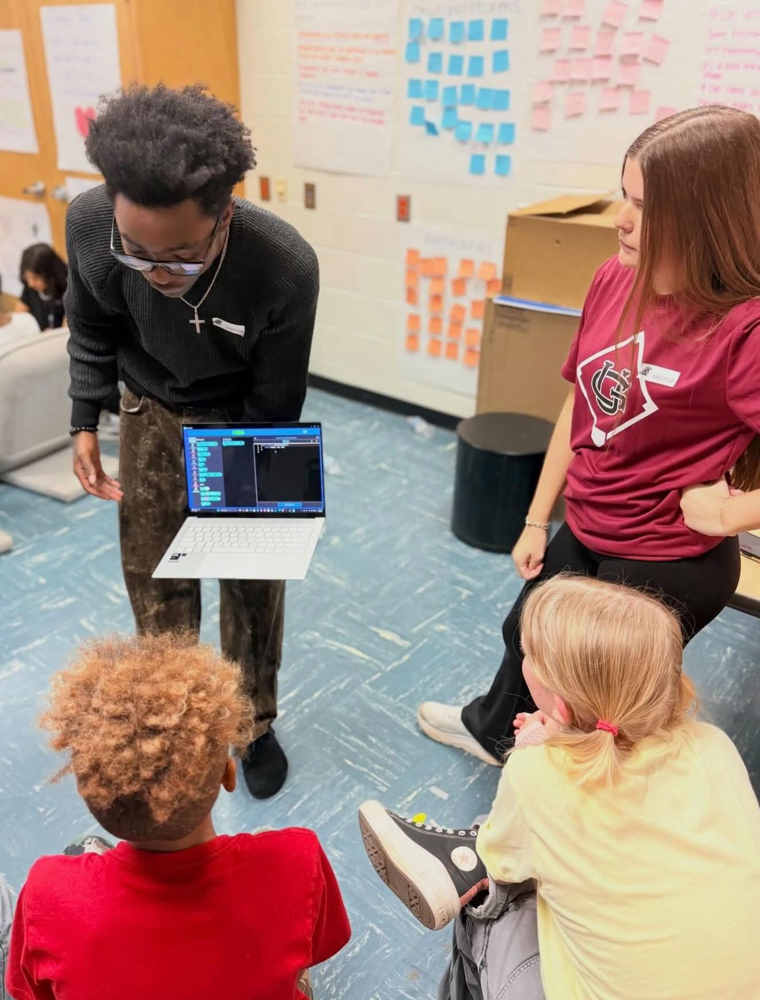
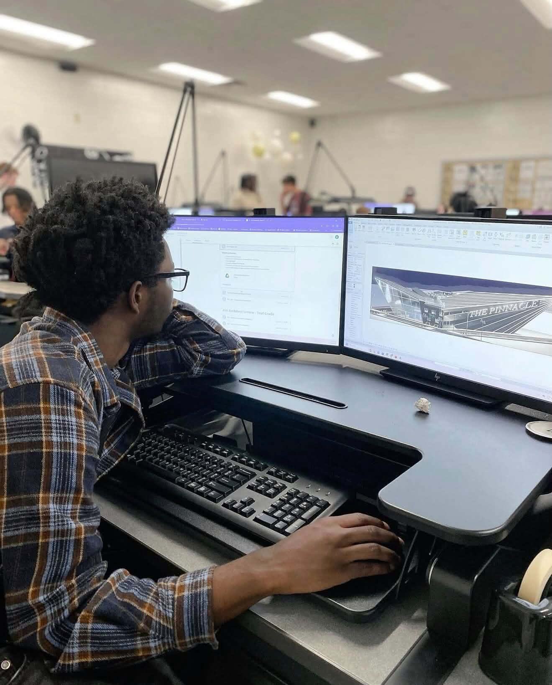

About me
The short version: curious, hands-on, and always taking something apart.
My story
My journey into electrical engineering began not with a breadboard, but with architectural blueprints and logistics datasets in McDonough, Georgia. While attending High School, I immersed myself in advanced architectural drafting and computer-aided design, earning industry certifications in Autodesk Revit, Inevntor, and AutoCAD and ultimately winning First Place in the American Institute of Architects (AIA) High School Design Competition in Spring 2026. Designing buildings taught me how physical systems distribute mechanical loads and how human users interact with spatial environments. However, as I modeled increasingly complex structures, my curiosity shifted from the static walls of a building to the dynamic electrical networks, sensors, and energy systems that bring modern infrastructure to life.
Alongside my design studies, I spent two years working as a Data Entry and Logistics Analyst at JET Logistics (July 2023 – August 2025). Confronted with massive operational datasets from material handling systems and regional delivery fleets, I engineered automated data collection pipelines to generate driver-route performance reports. Seeing how software automation and clean telemetry could eliminate physical bottlenecks sparked my passion for programming, prompting me to earn technical certifications in Python, HTML5, CSS3, and JavaScript.
Arriving at Georgia Tech in Fall 2026, I made the deliberate pivot from architecture to Electrical Engineering, selecting the Electric Energy Systems and Circuit Technology threads. This combination allows me to unite every discipline I have practiced. This past helps me approach engineering as both a rigorous quantitative science and a practical tool to make everyday infrastructure smarter, safer, and more sustainable.


Career goals
Long term, I want to design power systems that make clean energy practical or circuits designed efficently and effectively. My ECE Roadmap breaks the path into steps I can act on.
- Now to next year: finish core circuits and signals courses, join a research lab, and earn a summer internship.
- Junior year: specialize in energy systems and circuit technology, and lead a student project team.
- Senior year: complete a capstone, build a public portfolio of working hardware, and apply for engineering roles.
- First five years: work in energy or circuit design, earn my PE license track, and mentor newer engineers.
The gap I'm working on most is hands-on PCB design, so every project this year includes a board I lay out myself.
Resume
My one-page ECE Career Fair resume is below. Download the PDF for the full layout.
- Education: B.S. Electrical Engineering, Georgia Institute of Technology, expected 2030
- Skills: Python, HTML5, CSS3, Sodering, JavaScript, Arduino, Altium, GitHub, Autodesk Revit, AutoCAD, Autodesk Inventor, SketchUp
- Experience: Hytech Racing, Energy Club, JET Data Analyst
- Projects: RFID Bike Lock, Bike Generator